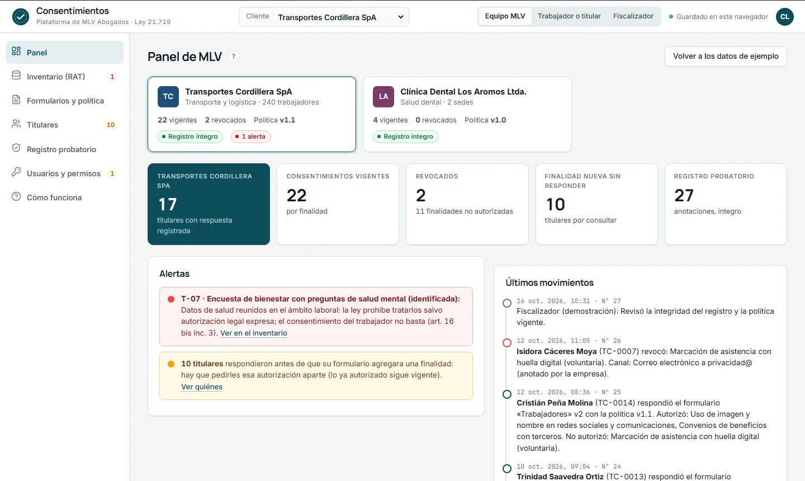

Plataforma de consentimientos
El consentimiento, probado.
Inventario, formulario con la marca de cada cliente, registro que delata cualquier alteración y un panel para el fiscalizador. Un solo flujo, bajo la Ley 21.719.
3vistas: MLV, titular, fiscalizador
SHA-256registro encadenado y verificable
0errores en la auditoría contra la ley

Equipo MLVInventario con semáforo, política con versiones, titulares, registro y usuarios.
Trabajador o titularFormulario con la marca de su empresa; comprobante y revocación por el mismo medio.
FiscalizadorSolo lectura: política, bases de licitud, integridad y expediente por RUT.
Solo cuando corresponde
El inventario manda: el semáforo dice cuándo pedir consentimiento y cuándo no. Lo que la ley prohíbe con consentimiento, queda en rojo. art. 12 · 13 · 16 bis
Prueba que no se altera
Quién, cuándo, qué versión de la política, qué leyó y qué autorizó: cada anotación encadenada con la anterior. Cambiar una rompe la cadena. art. 12 inc. 8
Hecho para el ámbito laboral
Autorizaciones aparte del contrato, sin consecuencias, con alternativa real. Biometría con la información exigida; salud de trabajadores fuera del formulario. art. 12 inc. 6 · 16 ter
Módulos del ecosistema
Demostraciones con datos ficticios. Nada sale del computador.
Ley 21.719 de protección de datos
ConsentimientosInventario, formulario por cliente, registro probatorio, revocación, usuarios y permisos, panel del fiscalizador.Abrir
Panel de clientes Estado de la adecuación de cada cliente: etapa, avance por obligación, plazos, incidentes, informe.
Derechos de los titulares Solicitudes de acceso, rectificación y supresión con sus plazos, cartas en borrador e historial.
Tachar antes de pegar Reemplaza nombres, RUT, fechas y montos por etiquetas antes de usar una IA, y los devuelve después.
Claude en el estudio
La propuesta De uso individual a sistema: roles, calendario, configuración, recetas, control de calidad y plan en fases.
Sistema de trabajo Cada proceso del estudio paso a paso, con dueño y revisión; tablero de casos e instrucciones para Claude.
Protocolo de uso de IA Las reglas del estudio para usar Claude y otras IA: semáforo, medidas técnicas y de gestión.
Bitácora de IA Cada uso anotado en un minuto; horas ahorradas, verificación de citas e informe mensual.
Diagnóstico de herramientas Encuesta anónima al equipo y el informe con lo que hay que atender y por dónde empezar.